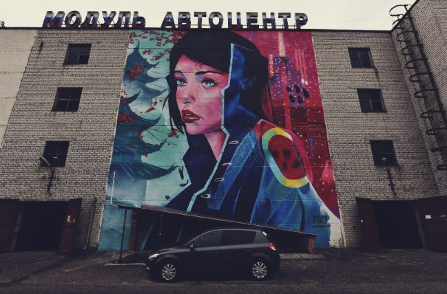

В Тюмени появился стрит-арт от художника из Перми на фестивале «Морфология улиц». 15-ти метровый рисунок девушки в стиле киберпанк украсил здание по адресу Северная, 9. Также 18 художников вышли на улицы города и начали наносить свои работы на шкафы связи и трансформаторные подстанции. Презентация пройдет 15 сентября.

Вячеслав Moff закончил стрит-арт «Взгляд в прошлое» размером 15 на 12 метров. Он отмечает, что в своих творческих работах старается создавать эскизы с привязкой к будущему, задевающие технологический процесс.
— В рисунке есть только отголоски общего смысла, но четкого посыла — нет. Он рассчитан на зрителя, который увидит, сам придумает историю, выдвинет теорию и поделится мнением с другом, в социальных сетях. Это и интересно в творчестве, — рассказал художник.
Кроме того, участники фестиваля «Морфология улиц» вышли на улицы города и начали воплощать задумки. В конкурсе принимают участие 9 художников в номинации «Малые формы» и 9 в номинации «Большие формы». Это как опытные стритартеры, так и молодые люди, которые ранее рисовали только на бумаге, увлекались изобразительным искусством, рисовали арты на стенах заведений.
В течение месяца художники отправляли свои эскизы на конкурс, а организаторы и федеральные эксперты фестиваля Владимир Абих и Вячеслав Moff выбирали лучшие. Рисунки должны были гармонично интегрироваться в форму и архитектуру объекта, обладать визуальной привлекательностью и подходить под тематику фестиваля — «Коллаборация». Так, они отобрали 18 работ, выполненных в разных техниках: от реализма до абстракции.
Среди работ: изображение мексиканской художницы Фриды Кало, серия из двух артов «Принять?» и «Отклонить?» (два изображения экрана смартфона со входящим звонком). Художник отмечает, идея в том, что современный мир ставит человека перед выбором: «Оставить все, как есть, или изменить жизнь к лучшему?
Также работа «Эхо войны», в центре — ржавая атомная бомба, которую прибило к берегу. А каменный пляж, волны и космос создают атмосферу распада. Стрит-арт «Инсомния»: днем видно спящих девушку и парня, а ночью видно персонажей около костра с открытыми глазами.
Кроме того, организаторы отмечают, что на фестивале свои задумки воплотили как федеральные художники, так и тюменский Владислав Тахтаулов. На Северной, 11 появится работа «Наш Новый мир» 6 на 12 метров. Она иллюстрирует современное состояние цивилизации, находящееся на пороге ухода от реального мира, и имеет отсылки к реальным произведениям искусства — предметам эстетики.
— Уместно ли в современном ландшафте запечатлеть нечто каноническое, а не абстрактное или концептуальное? Нуждается ли наше общество во все том же реальном искусстве, или же будет достаточно красиво написанных слов на заборе? Ответ на эти вопросы мы узнаем лишь, создав это произведение и получив объективные отзывы от общества, — делится Владислав.
Презентация работ пройдет 15 сентября на «Вечернем урбане». Всех желающих ждут на тюменской набережной. Также на событии жители города создадут арты на фанерной конструкции на тему «Характер города: Люди. Улица. Культура», а приглашенные эксперты проведут мастер-классы по аэрографии, скетчам, росписи одежды, мехенди, набиванию татуировок на фруктах.
.png)